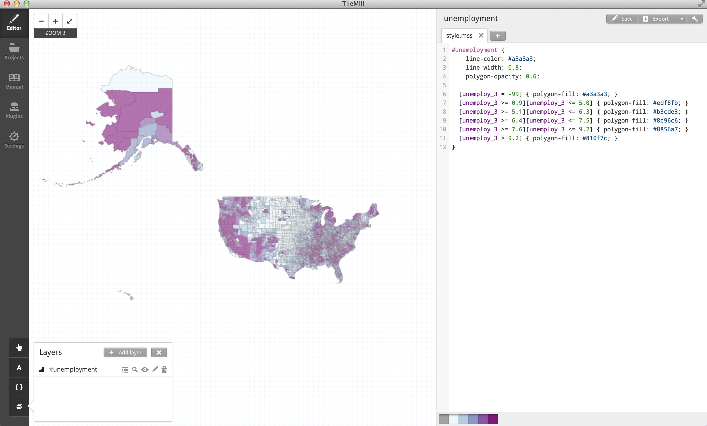
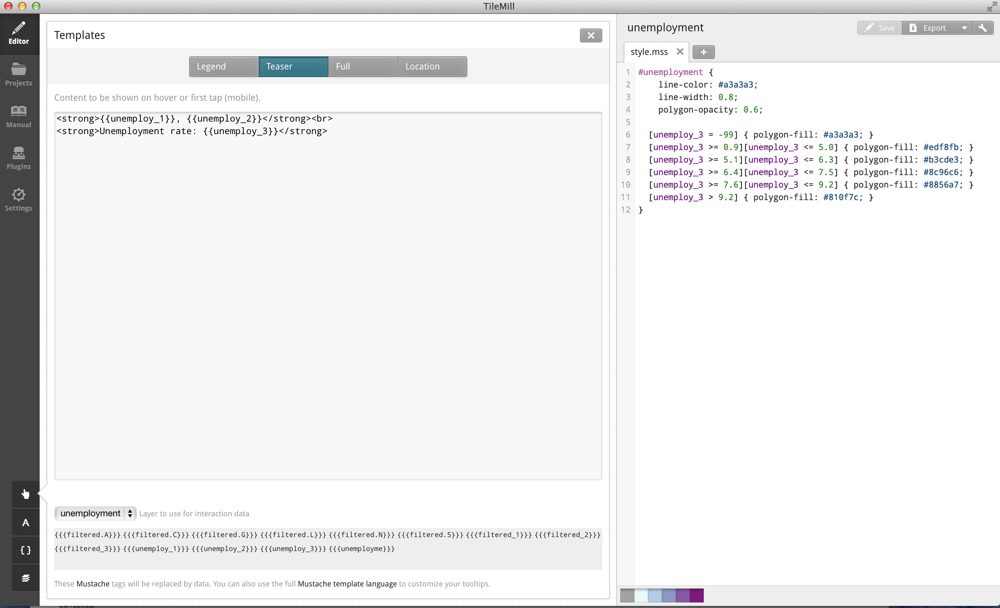

Let's Build a Portfolio!
Shannon Turner & Sarah Frostenson
Twitter: @svt827 @sfrostenson @shannonturner @sfrostenson frostenson.com/talks/
To copy and paste code snippests, all participants should follow along w/ the slides by navigating to frostenson.com/talks/ and clicking on the Let's Build a Porfolio slidedeck. To launch speaker notes simply type S on your keyboard.
What we're going to build
A one page, responsively designed website that showcases your work.
Portfolios are a great way to visually show employers what you've done, especially if you're applying for a technical position that requires coding skills.
What we're going to learn
One: Structuring Our Workspace
Create a new folder/directory on your desktop called site.
Within your site directory create an index.html file.
Create one additional directory within your site directory called styles.
Within your styles directory create a main.css file
Every website you build needs a root or project directory, which in this case is site. Our index.html file will form the backbone of our website and our styles directory will host our code that customizes our website's look and feel.
Two: Structure it in Your Terminal
sfrostenso@GCI-SFROSTEN2-M:~|⇒ cd Desktop
sfrostenso@GCI-SFROSTEN2-M:~/Desktop|
⇒ mkdir site && cd $_
sfrostenso@GCI-SFROSTEN2-M:~/Desktop/site|
⇒ touch index.html
sfrostenso@GCI-SFROSTEN2-M:~/Desktop/site|
⇒ mkdir styles && cd $_
sfrostenso@GCI-SFROSTEN2-M:~/Desktop/site/styles|
⇒ touch main.css
sfrostenso@GCI-SFROSTEN2-M:~/Desktop/site/styles|
⇒ cd ..
sfrostenso@GCI-SFROSTEN2-M:~/Desktop/site|
⇒
First we want to "cd" or change directory into our Desktop folder so we are all building from the same place on our computers. Once we're at the desktop, we'll make our directory site and change directly into it. From there we'll use touch to create a single file. And we'll use mkdir to make one more directory, called styles. In the styles directory, we'll want to create a main.css file. Once you've done this cd back to the root directory--site.
Three: HTML Setup
Because this slide presentation is one big html document, I had some issues including the doctype tag, html and head tags, which is why this portion is a screenshot and not an embed. They'll need to actually type this into their html file.
Four: Add some Body HTML
Now let's get something on the page. Go ahead and copy and paste the above code in between your body tags. We'll talk about what we're doing in just a second. The next slide shows a screen shot of what the body in your index.html file should look like.
Five: Launch a webserver
Go back to your terminal. From the site directory, launch a simple webserver by typing python -m SimpleHTTPServer
sfrostenso@GCI-SFROSTEN2-M:~/Desktop/site|
⇒ python -m SimpleHTTPServer
Serving HTTP on 0.0.0.0 port 8000 ...
To see your website in action type the this in the address bar: http://localhost:8000/
This should work for most of you. If it doesn't, it means Python isn't installed on your machine. That's ok. Just install it later. In the meantime, if you double click on your index.html file, it'll launch it in the web browser and you'll still be able to interact with the console and webpage.
Six: Inspect Your Page
There are two ways to launch your inspector tools (should work for Safari, Chrome, Firefox & IE)
Right click anywhere on the page and select Inspect Element
Use the keyboard shortcut Cmd + Option + I on a Mac or Ctrl + Shift + I on a PC.
The Inspector
This is roughly what your Inspector should look like--it varies from browser to browser. But the big thing, I want you to do now is to go through the DOM (short for Document Object Model--which refers to the html backbone of your site). Do you see our html code reflected in the Inspector? What happens when you select an element in the Inspector? Does it highlight the corresponding element on the page?
Seven: Bootstrap
Bootstrap is a popular HTML, CSS and JS framework for developing responsive, mobile first projects.
Bootstrap
Method I: Mapping in Mapbox Studio
Upload Project
Use unemployment-styles as name and upload to Mapbox.
Go to your Mapbox.com account and check for project under Styles.
By navigating to Settings.
Method I: Mapping in Mapbox Studio
Building A Simple HTML page
Go to https://github.com/sfrostenson/talks/blob/2015-03-nicar-mapbox/mbstudio-map/index.html
Copy and paste code into a text editor as index.hml or click raw and save as index.html. Save this file in the same folder as your unemployment.geojson.
Got Map?
Hover data works. Can zoom into an area, out of an area, etc. You've just built your first map!
Tile Mill

Luckily, for you TileMill is very similiar to Mapbox Studio. It's roughly the same process of creating a new project. We adding our data layer, unemployment.geojson and CartoCSS styles, except we don't have the intermediary steps of having to upload to Mapbox. You could even argue the process is cleaner at this stage. But remember, we don't know how much longer TileMill will be supported.
Tile Mill Hover Data

By clicking the pointed finger icon in the lower left, I can activate my unemployment layer and add my interactivity like we did in Mapbox Studio. I can even create an html legend.
So Why Not Use TileMill?
First of all, you can . I've included a tutorial at the end of the slides in Resources.
TileMill makes tiles. Mapbox Studio makes vectors. Vectors won't look fuzzy under high resolutions. Images will.
You can't customize your baselayer in TileMill. But you can in Mapbox Studio.
Method II: Mapping using Mapbox.js
Line 65 in index.html:
var unemploymentLayer = L.geoJson(unemployData, { style: style, onEachFeature: onEachFeature }).addTo(map);
Variable in unemployment.geojson:
var unemployData = {
"features": [
{
"geometry": {
"coordinates": [
[
[
-121.447540446521,
41.997168804479195
etc........
First of all, top of the script has all the same requirements as our other index.html file. Then we've got some map and legend styles and some html code that creates a Mapbox legend on our page in addition to the div for our map.
Method II: Mapping using Mapbox.js
Interactivity and Styles
var popup = L.popup();
unemploymentLayer.on('mouseover', function(e) {
e.layer.openPopup();
});
unemploymentLayer.on('mouseout', function(e) {
e.layer.closePopup();
});
The rest of our index.html is focused on assigning interactivity and styles to our map that are then referenced in the style:style and onEachFeature:onEachFeature of line 65.
Got Map?
Hover data works. Can zoom into an area, out of an area, etc. You've just built your first map!
PRO/CONS of Methods?
Mapbox Limitations?
This is when I ask you for feedback. Which method did you like better?